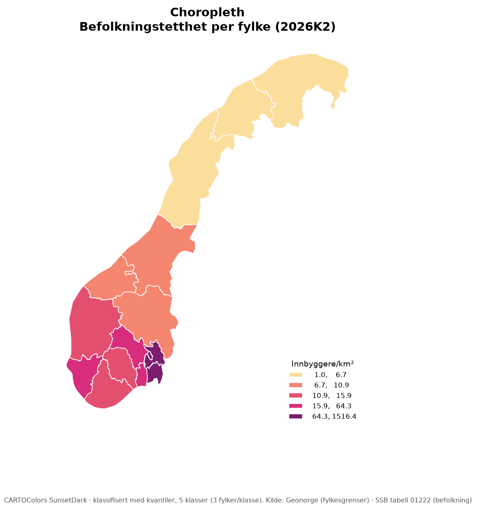
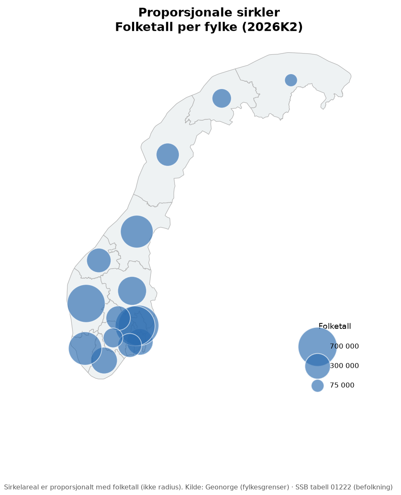
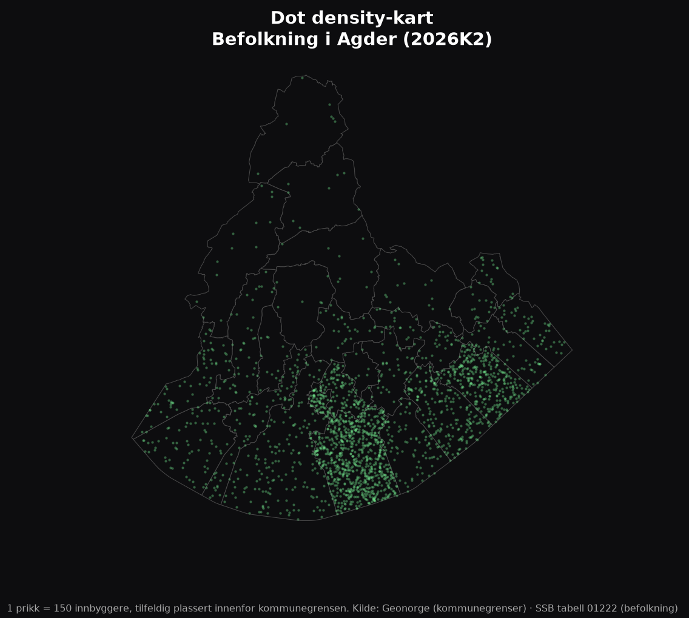
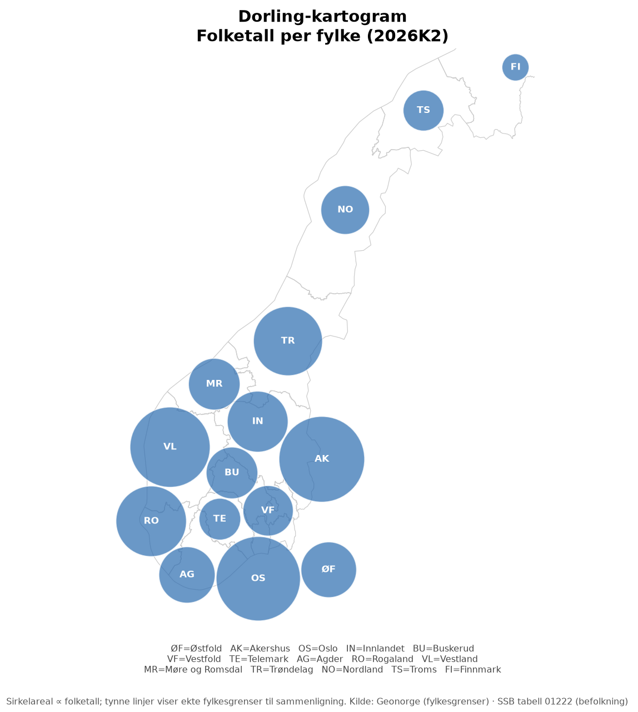
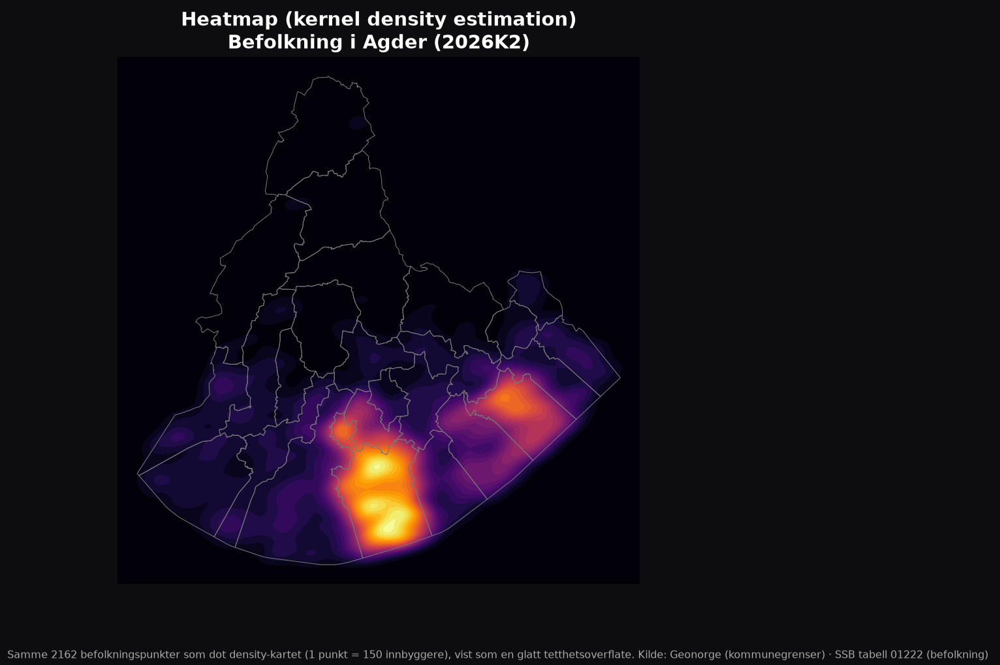

1. Choropleth
(choropleth map)Administrative enheter (her: fylker) farges etter en klasseinndelt verdi. Metoden er den mest brukte formen for tematisk kart, og den som oftest brukes feil.

Data
Fylkesgrenser fra Geonorge + folketall fra SSB tabell 01222, normalisert til tetthet (innb./km²).
Bruk til
Rater, andeler og tettheter bundet til et areal: valgdeltakelse, arbeidsløshet, inntekt per innbygger.
Unngå til
Absolutte totaler (folketall, antall biler). Store/arealrike enheter dominerer visuelt selv om verdien ikke er høyere relativt.
2. Proporsjonale sirkler
(proportional / graduated symbols)En sirkel plasseres på hvert sted, med areal proporsjonalt med verdien. Samme datasett som choropleth-eksemplet over – men her vises rene folketall, ikke tetthet.

Data
Samme fylkesdata som choropleth-eksemplet, men med rått folketall i stedet for tetthet.
Bruk til
Absolutte totaler og mengder – akkurat det choropleth bør unngå.
Fallgruve
Lesere oppfatter ofte radius, ikke areal, lineært med verdi. Riktig praksis er å skalere arealet (π·r²), ikke radiusen direkte.
3. Dot density-kart
(dot distribution map)Hver prikk representerer et fast antall enheter (her: 150 innbyggere), tilfeldig plassert innenfor grensen til kommunen den hører til. I motsetning til choropleth, som gir hele enheten én jevn farge, lar dot density-kartet øyet selv oppfatte variasjon innenfor enhetene – selv om prikkene ikke viser faktiske boliger.

Data
Kommunegrenser fra Geonorge og folketall fra SSB, for de 25 kommunene i Agder fylke.
Bruk til
Å vise konsentrasjon/spredning av et fenomen uten å late som man vet nøyaktig hvor hver enhet er.
Fallgruve
Prikkene er tilfeldig plassert innenfor kommunen – ikke faktiske adresser. Valg av «verdi per prikk» og tilfeldig frø påvirker hvor jevnt/klumpete kartet ser ut.
Videre lesning
4. Kartogram (Dorling)
(Dorling cartogram)Geografien forlates helt: hvert fylke blir en sirkel med areal proporsjonalt med folketallet, plassert så nær sin egentlige posisjon som mulig uten at sirklene overlapper. Samme datasett som de to første eksemplene – en tredje måte å vise det på.

Data
Samme fylkesdata som choropleth- og sirkel-eksemplet.
Bruk til
Å bevisst overdrive den visuelle vekten til befolkningsrike, men arealmessig små enheter (f.eks. Oslo) – motsatt av et vanlig arealkart, som overdriver store, glisne enheter.
Fallgruve
Lesere kan miste geografisk orientering helt. Krever at man beholder en form for nabolagsrelasjon eller referansekart for å forbli forståelig.
Videre lesning
5. Heatmap (kernel density estimation)
(heat map / KDE)I stedet for å telle punkter innenfor forhåndsdefinerte enheter (som i dot density), beregner et heatmap en glatt, kontinuerlig tetthetsoverflate direkte fra punktene selv. Her er datagrunnlaget nøyaktig det samme som i dot density-eksemplet over – de disaggregerte befolkningspunktene for Agder – kjørt gjennom en kernel density-beregning i stedet for tegnet som enkeltprikker.

Data
De samme disaggregerte befolkningspunktene for Agder som i dot density-eksemplet (Geonorge + SSB tabell 01222).
Bruk til
Å vise konsentrasjon som en sammenhengende overflate, uten de synlige kommunegrensene et choroplethkart ville tvunget frem.
Fallgruve
Båndbredden (bw_method) i KDE-beregningen er et subjektivt valg som avgjør hvor «klumpete» eller «glatt» kartet blir – akkurat som klasseantall i choropleth eller innbyggere/prikk i dot density.